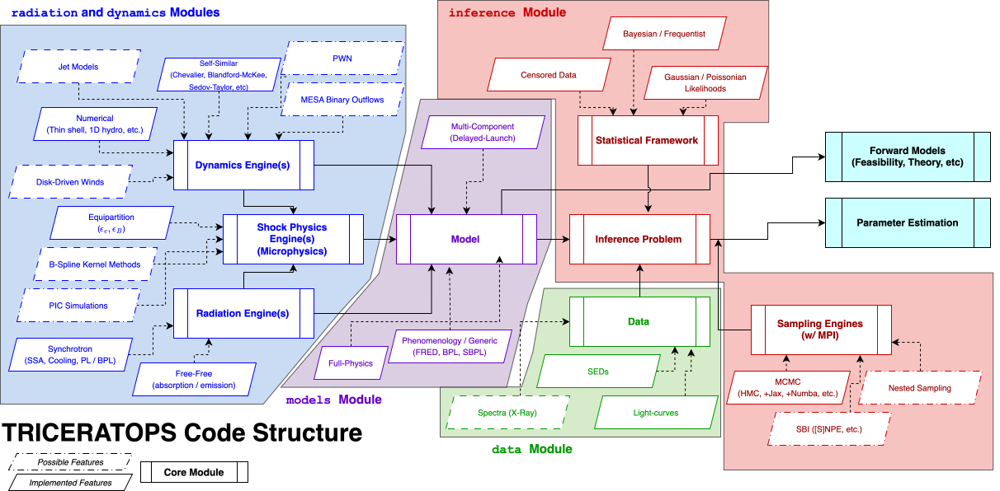

Triceratops User Guide#
Welcome to the Triceratops User Guide! This page is the location of all technical documentation for the triceratops library and is generally the first place to look when seeking information on how to use the library. In addition to the resources on this page, the API reference (API) gives in-depth information about call signatures and code structure. The developer guide (Triceratops Developer Guide) is a resource for those who want to contribute to the library or understand the codebase in detail.
Topics in this guide are broken down by subject area, with each section providing a comprehensive overview of the relevant components and their usage.

The structure of the Triceratops codebase, showing the main modules and their relationships. The user guide covers the data, models, inference, and physics modules, which are the core components of the library. The extensions and analysis sections cover additional functionality and workflows that leverage these core components.#
Getting Started#
To get started with triceratops, check out Quickstart Guide guide which walks through installation, basic usage, and a simple example. This is a great place to begin if you’re new to triceratops or scientific Python in general. You can also explore the Triceratops Example Gallery section for more in-depth tutorials and use cases.
Data Loading, Handling, and Visualization#
The first step in any radio analysis is to load and visualize your data. The data modules in triceratops provide tools for loading, processing, and visualizing observational data. Most importantly, these structures are the entry point to the library, providing a consistent interface for working with different types of data in our model and inference pipelines. The following guides cover the relevant functionality:
Triceratops Models#
The core functionality of triceratops is its ability to create physical models of radio sources and their environments. These models are built using a combination of modular building blocks that represent different physical processes and components. The following guides provide an overview of the modeling capabilities of triceratops:
More than any other part of the Triceratops library, the models section is designed for extensibility, even by every day users of the code. It is important to be able to correctly leverage the capabilities of the building blocks and correctly implement the models relevant to your science case.
Inference and Statistical Analysis#
Triceratops models are designed to very easily plug into inference pipelines to perform parameter estimation and model comparison. The inference modules provide tools for setting up and running inference analyses using various sampling algorithms. The following guides cover the relevant functionality:
Building Blocks#
Behind every Triceratops model are a set of modular building blocks that define the physical processes and components of the system being modeled. These building blocks can be combined in various ways to create complex models that capture the nuances of radio observations. The following guides provide an overview of the various modules and the constituent physics:
Extensions and 3rd Party Libraries#
Configuration and Setup#
Analysis Guides#
Having now covered all of the core infrastructure of the Triceratops library, we can now turn to the analysis pipelines that leverage these components to perform scientific inference and other important workflows. The goal of the guides in this section is to provide a comprehensive overview of the standard methods used in the literature to analyze various types of radio transients and how to perform those analyses using Triceratops. We break down the guides by system.